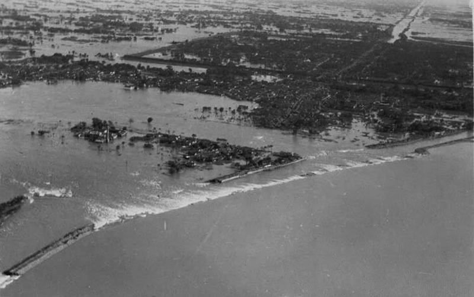
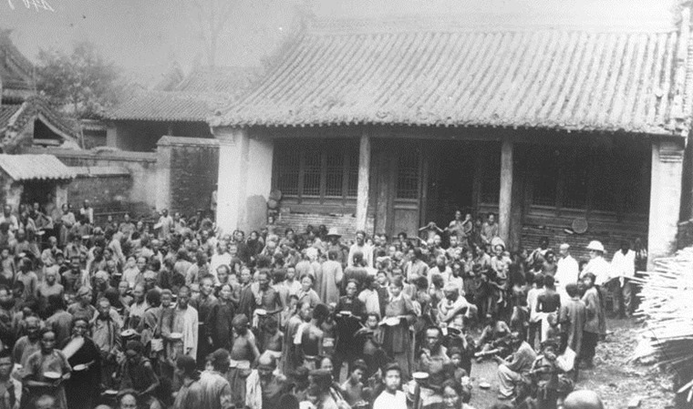
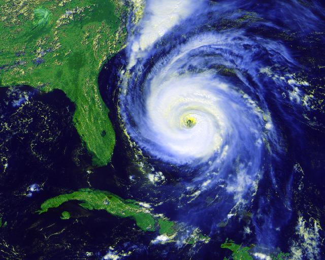
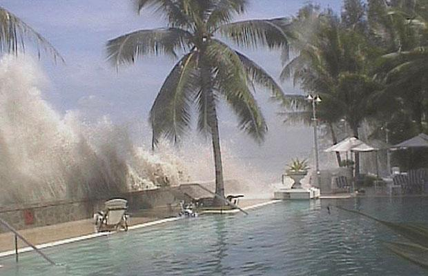
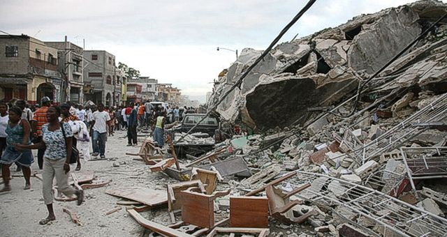
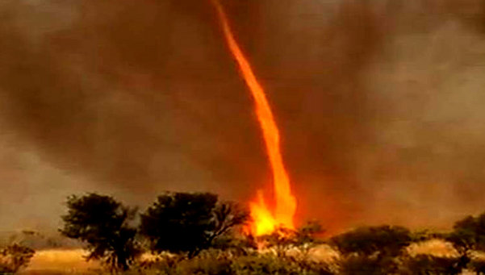
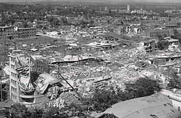

Los peores desastres naturales de la historia
Un desastre natural es un evento repentino, inesperado que causa gran destrucción, muertes y daños a la propiedad. Un desastre natural puede ser causado por terremotos, inundaciones, erupciones volcánicas, deslizamientos, huracanes, etc.
A continuación se listan los mayores desastres de la historia:
Las inundaciones de China en 1931
 Este acontecimiento, es considerado como el peor desastre natural de la humanidad , dejo un saldo de 4 millones de muertos y 23 millones de damnificados.
En el invierno de 1931 inusuales tormentas de nieve azotaron la región central de China, fueron seguidas de un deshielo de primavera, ademas de fuertes lluvias que elevaron el nivel de los ríos de forma significativa. En el mes de julio, 7 ciclones azotaron la region, el promedio anual de ciclones es de 2 por año.
Las inundaciones del rio amarillo en China, en 1887
 Tambien en China se encuentra registrado el segundo peor desastre natural de la historia, tambien provocado por inundaciones. Este río es propenso a las inundaciones debido a la naturaleza elevada del río, que corre entre los diques por encima de las llanuras que lo rodean. La inundación que comenzó en septiembre de 1887, termino matando a unas 900.000 personas.
El Ciclon Bhola en 1970
 Ha sido el ciclon mas mortifero registrado hasta la fecha que azoto a Pakistan Oriental (actual Bangladesh). Se calcula que 500.000 personas perdieron la vida.
El Tsunami del 2004
El Tsunami del 2004">El tsunami del 26 de diciembre del 2004, causado por un maremoto (terremoto bajo el mar) de magnitud 9.0 (equivalente a 23,000 bombas atómicas) que causó una oleada que anegó 11 naciones del Pacífico, causando unas 230,000 muertes.
Terremoto de Haiti
El terremoto en Haití, el 12 de enero del 2010, con una intensidad de 7.0 y causando unas 316,000 muertes en el país, el más pobre del continente. La destrucción de la débil infraestructura de Haití dejó a los haitianos expuestos a enfermedades: un brote de cólera le causó la muerte a unas 4,000 personas má
Remolino de fuego en Japon
En 1923, tras el Gran Terremoto de Kanto que se produjo en Tokio, Japón, un tornado de fuego cuyo tamaño ha sido referido como el de una ciudad grande mató a 38 mil personas en 15 minutos.
Terremoto en Turkmenistán de 1948
El terremoto en Turkmenistán, en la antigua Unión Soviética, con intensidad 7.3 en la escala Richter, en el 1948. El sismo acabó con la vida de unas 110,000 personas.